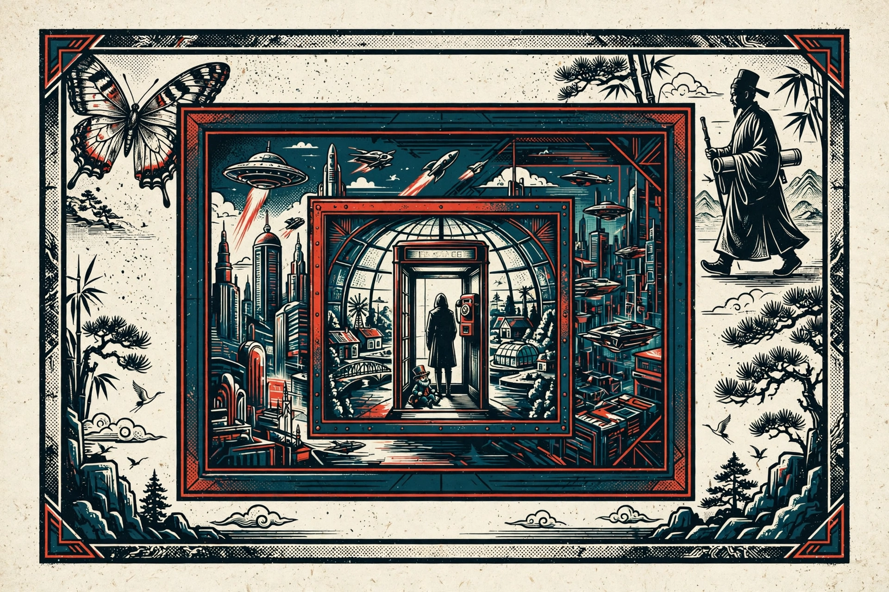

紀元前4世紀哲学の層
胡蝶の夢
荘子が蝶になる夢を見て目覚める。荘子が蝶の夢を見たのか、蝶が荘子の夢を見ているのか、原理的に判定できない。仮想現実ものの全作品は、結局この一文の変奏にすぎないという意味で、紀元前にして核が完成している。
- 何が新しいか
- 「どっちが現実か分からない」を、恐怖ではなく愉快な悟りとして提示した最古の形。
- 後の作品へ
- 判定不能という一点は、デカルトの悪霊を経て、ディックとレムのパラノイアに反転して受け継がれる。
アトラスシリーズ ― 根源的な問い／世界の真偽（増補・深化版）
『マトリックス』（1999）は発明ではない。収束だ。コンピュータの中に街ごと世界を作る『模造世界』、死者の意識が半生状態で漂う『ユービック』、自分が設計した世界に囚われる『仮想空間計画』――その骨格は1999年よりずっと前に、ほぼ全部そろっていた。
しかもマトリックス以前の作品ほど結末が冷たい。階層がどこまで続くのか、戻った先が本物なのか、誰にも保証できないまま物語が閉じる。このリストは、その「保証のなさ」を軸に、哲学の原点から現代の末裔までを一本に並べ直した深化版である。
付録「エンタメ系の系譜 ― 遊びになった仮想現実」へ ↓ クリス・クロスからSAO、トゥルーマン・ショー、GTA、サイバーパンク2077まで、本編のあとに31作を追加した。『オープン・ユア・アイズ』は本編の年表へ昇格し、『シックス・センス』と『アザーズ』は番外の枝「死者側の現実」に置いた。前回の増補では『トゥルー・ネームズ』『トロン』『ビデオドローム』『スノウ・クラッシュ』が本編へ上がり、ボルヘス『トレーン』、serial experiments lain、『コングレス未来学会議』が付録に加わった。今回の増補では、世界そのものがシミュレーションである『アノニマス・コード』（2023）が本編の年表の末尾に加わり、世界線の書き換えとAIクリスを擁する『シュタインズ・ゲート』（2009／アニメ2011）が付録E「前提がひっくり返る」に加わった。そして今回、漏れていた一本が戻ってきた。宇宙船の中に再現された1980年代の東京と、街の顔である歌姫AIイヴを擁する『メガゾーン23』（1985）である。時間を移動する話ではなく、「時代そのものが再現され、住人がそれと知らずに生き続ける街」の話として、本籍はこちらの系譜に置く。さらに、岡嶋二人『クラインの壺』（1989）を本編の年表へ戻した。体感型の仮想現実システム「クライン2」で現実との境が判定できなくなる、マトリックス以前の日本の長編である。さらに、記録と実在の境を溶かす『モレルの発明』（1940）と、夢が目覚めたあとの世界を書き換える『天のろくろ』（1971）を本編へ、ゲームと現実が重なる韓国ドラマ『アルハンブラ宮殿の思い出』（2018）を付録Eへ加えた。本編26作＋付録32作、合わせて58作の系譜になった。

神か、悪霊か、企業か、開発者本人か。作り手の正体が、そのまま作品の恐怖の質を決める。後期の作品ほど作り手が「会社」と「同僚」になっていくのが、この系譜の静かな不気味さだ。
電話ボックス、ログアウト、合言葉、死による反転――。脱出の仕組みは作品の署名のようなもので、マトリックスの「電話で脱出」にも直系の祖先がいる。
持ち主だけが意味を知る小さな私物、層をまたいで届く硬貨、思い出すはずのない記憶。判定装置が小物に宿る系譜は、のちに『インセプション』のトーテムへ流れ込んだと読める。
23作を表示中
荘子が蝶になる夢を見て目覚める。荘子が蝶の夢を見たのか、蝶が荘子の夢を見ているのか、原理的に判定できない。仮想現実ものの全作品は、結局この一文の変奏にすぎないという意味で、紀元前にして核が完成している。
洞窟の壁に映る影だけを見て育った囚人たちは、影を現実だと思い込む。誰かが「世界を上映している」という構造――作り手と観客の非対称――を初めて描いた比喩であり、シミュレーション仮説の遠い祖先。
全能の悪霊が感覚のすべてを偽造しているかもしれない、と仮定して思考を極限まで追い込む。「世界を作って見せている悪意ある他者」という設定は、シミュレーションの管理者・開発者という近代SFの登場人物の原型でもある。
無人に見える島で、語り手は、毎日おなじ仕草を繰り返す人々の姿を見る。モレルの「発明」は、記録と実在の境を溶かしていく。コンピュータ以前に、再現された人と、それを見る者が同じ場所に立つ構図を書いた、ラテンアメリカからの一本。
SF誌の編集者が、パルプSFのお約束――虫目の宇宙人、宇宙ヒーロー、都合のいい偶然――がそのまま物理法則になっている並行世界に放り込まれる。自分の世界の常識が通じないズレを、恐怖ではなく笑いで描いた早い例。
男は同じ6月15日を繰り返し生きている。やがて分かる真相は、町ごとミニチュア化され、広告実験の被験体として卓上の世界で回されていたというもの。邦訳は河出文庫『20世紀SF2 1950年代 初めの終わり』や、ハヤカワ文庫のポール短編集『ボロゴーヴはミムジイ』に収録。
コンピュータの中に街ごとシミュレーションを作り、住民たちの反応を世論調査に使う。操作者はシミュレーション内の「個体」に意識を転送して入り込み、出入りは外側の装置が管理する。マトリックスの直接の先祖と呼ぶべき一冊。
この作品の出入りに、人形のような媒介アイテムは使われない。移動の鍵はアイテムではなく場所（電話ボックス）と外側の装置だ。「小鬼の人形」がキーになる作品は別にあって、それが1995年の『仮想空間計画』――長く混線していた記憶の出所は、系譜の隣同士の作品だったわけである。
死者は「半生状態」で意識だけの世界に留まり、生者と干渉し合う。その死後世界すら営利施設（モラトリアム）によって運営され、現実そのものが時間とともに退行・腐敗していく。答えが最後まで出ないため、考察が無限に続く作品。
ユービックは「死んだ側の世界」を内側から描く。死者が死者として生活し、生者の世界に干渉する構図は、ゾンビ映画が死者を外から撮るのとちょうど裏表の関係にある。死後世界が商売で成り立っている皮肉まで含めて、1969年の作品とは思えない先行性がある。
『ソラリス』のレムが、ディック寄りの一面を全開にした長編。薬物によって階層化された幻覚世界を何層も潜っていくが、覚醒したと思った層が次の幻覚である保証はどこにもない。1984年に集英社から邦訳が出て、2015年にハヤカワ文庫SFで改訳版が出た。
ジョージ・オーアの夢は、目覚めたあとの世界を書き換える。見たものが、共有された現実として残るとき、世界の真偽を測る装置は、夢の側へ移る。同じ1971年の『泰平ヨンの未来学会議』が幻覚の階層を描くなら、こちらは「夢が公共の世界を直してしまう」側の話である。
『模造世界』の最初の映像化。西ドイツのテレビ映画として作られ、コンピュータ内の人工社会と、その外側の世界の不穏な重なりを、ファスビンダーらしい冷えた演出で描いた。マトリックスの26年前に、入れ子世界はもう映像になっていた。
ハッカーたちが魔術師のアバターで集うネットワーク上の「向こう側（Other Plane）」。そこでは正体――本名（トゥルー・ネーム）――を知られることが現実での逮捕と死を意味する。『ニューロマンサー』の3年前に、電脳空間の社会とアイデンティティの危険をほぼ完成形で描いた、サイバーパンクの隠れた起点。
ゲーム開発者ケヴィン・フリンがレーザーでデジタル化され、コンピュータ内部の世界へ取り込まれる。内部ではプログラムたちが「ユーザー」を神のように崇め、支配プログラムMCPに抵抗している。エンタメ映画として初めて「コンピュータの中の社会」を大規模なCG映像で見せた大物で、『仮想空間計画』（開発者が自分の世界に囚われる）の映画版の対になる。
海賊テレビ局の経営者が、拷問映像を流す謎の信号「ビデオドローム」に触れ、幻覚と肉体の変容に呑まれていく。映像信号が脳に腫瘍を作り、現実と放送の境界が溶ける。「ロング・リヴ・ザ・ニュー・フレッシュ（新しい肉体万歳）」――メディアが現実を侵食するという発想を、ボディホラーで実装した一本。
『ビデオドローム』（1983）は信号が人を侵食する話、『イグジステンズ』（1999）は生体ゲーム機に人が接続する話。同じ監督が、仮想現実の入り口を「放送」と「ゲーム」の両方から撮った。マトリックスと同年に後者が公開されたことは偶然ではなく、1983年からの問いが1999年に収束した証拠でもある。
「電脳空間（サイバースペース）」のイメージを決定づけた一冊。意識がネットワークの空間を駆け、肉体は「ミート」として置き去りにされる。仮想世界が「もう一つの現実」から「日常的に接続する労働と犯罪の現場」へ変わった転換点。
バイクと音楽に明け暮れる青年・矢作省吾が暮らす1980年代の東京は、実は本物ではない。人類が地球を離れて数百年後、その街は巨大宇宙船「メガゾーン」の内部にそっくり再現され、住民は自分たちが船の中にいることすら知らずに日常を生きている。街を管理するのはスーパーコンピュータ「バハムート」、そして街いちばんの人気アイドル歌手・時祭イヴは、バハムートが生み出す映像――実在しない歌姫だった。
イヴは人間ではない。バハムートが街の統制のために生み出した、映像だけの歌姫である。それでも住民にとって彼女は本物のアイドルであり、声と姿が人々の日常と感情を本当に動かしている。「作られた存在が、作られた世界の中で本物の影響力を持つ」という二重構造は、ウェストワールドのホストやフリー・ガイのNPCの自覚へと続く付録の横断テーマ「作られた側」の、早すぎる先行例でもある。
ゲームブック『ブレインシンドローム』をイプシロン・プロジェクトに売ったシナリオライター上杉彰彦は、その世界をまるごと体感できる仮想現実システム「クライン2」の試験に立ち会う。被験者の高石梨紗が忽然と姿を消し、上杉は仮想空間の奥へと引きずり込まれる。表も裏もないクラインの壺を名に冠した装置は、どこまでがゲームでどこからが現実かを、判定の根拠ごと溶かしはじめる。『マトリックス』の十年前、日本のミステリが到達した、戻れなくなる没入の小説である。
岡嶋二人は徳山諄一と井上夢人の共同ペンネームで、本書が最後の長編となった（のちに二人は解散する）。本文の大半は井上の筆とされ、題名は内と外の区別がない位相幾何のクラインの壺から取られている。装置の名は「クライン2」である。井上が単独名義で書いた『ダレカガナカニイル…』（1992）は人工知能アトラスの付録に、『魔法使いの弟子たち』（2010）は終焉アトラスの付録に置く。作者の系譜としてはつながるが、本書の問いそのものは「頭の中の声が心かどうか」ではなく、「今いる場所が現実かどうか」である。
ピザ配達員にして凄腕ハッカーのヒロ・プロタゴニストが行き来する仮想世界「メタバース」と、その分身「アバター」――この二つの言葉を世界に命名した一冊。現実のアメリカがフランチャイズ国家に細分化された近未来で、コンピュータと脳の両方に感染する言語ウイルス「スノウ・クラッシュ」をめぐる冒険が展開する。GTAやサイバーパンク2077が立つ地面は、ここで舗装された。
「メタバース」と「アバター」は、この小説の造語が現実の産業用語になった稀な例だ。フィクションが現実を予言したのではなく、現実の開発者たちがこの小説を読んで同じ名前で作り始めた。系譜の中で、影響の矢印が作品の外へ最も強く飛び出した一冊である。
意識をスキャンした「コピー」たちが生きる仮想世界を、ホストとなる計算基盤から独立させる。開発者側が物理法則ごと世界を設計し、作った世界が作り手の手を離れて自律する――ハードSFの極北にある一冊。
主人公コリガンは、自分が設計した仮想世界に、記憶を消されたうえで閉じ込められる。彼はシステムに脱出用のバックドアと合言葉を仕込んでいたが、それを忘れている。アイルランド出身の彼が、小鬼レプラコーンの置物を見たことでキーワードを思い出し、反撃が始まる。
本人しか知らない合言葉と結びついた私物の小物が、世界の外への鍵になる。『インセプション』（2010）のトーテム――持ち主だけが本当の感触を知る小さな判定装置――に感じた「影響」の感覚は、この作品に照らすとよく分かる。判定装置が小物に宿る系譜は、ユービックの層をまたぐ硬貨から、レプラコーンの置物を経て、コマへと流れている。
脳を直接ネットに接続する電脳化と、全身義体が当たり前になった世界で、「自分が自分である根拠（ゴースト）」を問う。仮想現実の問題が「世界の真偽」から「自我の境界」へ移った、日本発の到達点。
事故で顔を失った男セサルが、冷凍保存のあとに望みどおりの人生を明晰夢として見続けるサービスと契約し、夢の中で生き続ける。だが夢は少しずつ綻び、愛したはずの女性の顔が別の顔に入れ替わる。これは番外ではなく、仮想現実そのもの――本編の年表に入る格の作品だ。
アメナーバルはこの作品で「作られた夢の世界」を撮り、4年後の『アザーズ』（2001）では「死者側の現実」を撮った。仮想現実と死者側――このページの本編と番外の両方に触れる監督は、彼しかいない。付録G「死者側の現実」と合わせて観ると、監督の両面が見える。
『模造世界』の映画化そのもの。1937年のロサンゼルスを再現したシミュレーションへの出入りをめぐる殺人と、層をまたぐ意識の移動を描く。マトリックスと同年公開で、その影に完全に隠れた不遇の作品。
この系譜の収束点。洞窟の比喩の「影の世界」、模造世界の「電話による出入り」、ギブスンの電脳空間、攻殻の身体感覚が、一本の娯楽映画に結晶した。ただし先行作品群と比べると、結末はずっと楽天的だ――「現実に戻れる」ことが保証され、英雄の覚醒で物語が閉じる。
死の間際に意識をアップロードし、仮想の死後世界「レイクビュー」で暮らし続ける。生者とは通話やVRで干渉し合うが、その死後世界は課金とプランで成り立つ商売でもある。系譜の末っ子にして、『ユービック』の正統な孫。
2037年、地球そのものをシミュレーションする「アースシミュレータ」が存在する世界で、主人公ポロンは世界が何層にも重なったシミュレーションであることに気づいていく。世界そのものがスーパーコンピュータの上で回っている――設定の芯は、紛れもなくこの系譜のど真ん中にある。
この系譜で世界をいじってきたのは、悪霊、企業、開発者、そして神だった。『アノニマス・コード』でその座に着くのは、セーブ＆ロードを握ったプレイヤー自身である。「誰が世界を作ったのか」という本編の第一の問いは、ここでついに操作する側の手に渡る。同じ科学ADVシリーズの『シュタインズ・ゲート』（付録E）が世界線の書き換えを描いたのに対して、こちらは世界の層そのものの書き換えを描く――シリーズ内部でも、問いの深さが一段潜っている。
脱出の仕組みは、作品の署名である
『模造世界』（1964）で操作者がシミュレーション内に出現する場所は、電話ボックスだった。出入りは外側の装置が管理し、世界の内側では「電話のある場所」が層の継ぎ目になる。35年後、『マトリックス』は電話を脱出の必須装置にした。受話器を取ることが、世界を抜けることと同義になったあの設計は、ガロイの絵の直系だと言える。
同じ原作の映画『13F』は、もう一つの帰還方法を提示した。転送の反転――乗っ取った個体が死ぬと、意識は上位世界へ跳ね返る。「死が帰還のトリガーになる」という発想は、ログアウトという事務的な手続きよりずっと物語的で、ラストの2024年への上昇を成立させた仕掛けでもある。三作を並べると、脱出方法の進化――場所（電話ボックス）→ 手続き（電話回線）→ 反転（死）――がそのまま系譜の深化として読める。
半生状態とレイクビューは、51年違いの同じ皮肉である
『ユービック』（1969）の半生状態は、モラトリアムという営利施設の中で維持される。死者の意識は保存され、生者との通信はサービスとして提供される。『アップロード』（2020）のレイクビューも同じ構造で、死後の生活はプランとアプリ内課金で階層化されている。死んでまで資本主義から逃げられない、という皮肉は51年間ずっと有効なままだ。
決定的に違うのは世界の信頼度だ。アップロードの世界は安定していて、疑うべきは制度と人間関係のほう。ユービックの世界は基盤そのものが腐敗していく。物は古い時代へ退行し、時間は巻き戻り、届く硬貨の年代がずれていく。同じ「死後の商売」でも、一方は社会派コメディ、他方は形而学ホラーになる。この温度差が、ディックという作家の特異点をいちばんよく示している。
持ち主だけが意味を知る小物は、なぜ繰り返し現れるのか
世界全体が偽物かもしれないとき、最後に頼れるのは統計でも哲学でもなく、自分の手の記憶だ。ユービックでは層をまたいで届く硬貨が世界の異常を告げ、『仮想空間計画』ではレプラコーンの置物が消されたはずの合言葉を呼び戻す。どちらも「持ち主だけが本当の意味を知っている小物」が、世界の判定装置になっている。
『インセプション』（2010）のトーテム――回り続けるコマ――を見たときに「これはあの系譜だ」と感じるのは自然なことだと思う。トーテムはマトリックス以降の作品だが、その発想の型は1995年のホーガンに既にある。系譜はマトリックスで終わらず、判定装置のモチーフとして次の世代へ流れ込んでいる。
系譜の背骨を最短で通すコース。ポールの短編で「広告のための模造世界」の原型を押さえ、ガロイで完成形を読み、映画で反転の仕掛けを見る。今回買った『虚影の街』はここから始めるのが正解。
虚影の街購入済→模造世界→13F
「抜けたはずの層がまだ夢だった」という感覚を連続で味わうコース。ユービックの腐敗する現実のあとにレムの薬物の層を重ねると、マトリックスの結末がいかに楽天的だったかが逆照射される。今回買った『泰平ヨンの未来学会議』はこのコースの二冊目。
ユービック→泰平ヨンの未来学会議購入済→ワールド・オン・ワイヤー
作る側の視点で統一されたコース。イーガンが「物理法則ごと設計し、ホストから独立させる世界」を描いた翌年に、ホーガンが「囚われた開発者の奪還戦」を描いた。この二冊を隣で読むと、90年代半ばにモチーフが成熟しきっていたことが分かる。
順列都市→仮想空間計画→マトリックス（再見）
本編が「世界は本物か」を問う哲学とハードSFの系譜だったのに対して、付録はそのあとの話だ。仮想現実が、哲学の問題から「遊び・番組・街・商品」になった瞬間から、系譜は一気に大衆化し、日本のライトノベルとゲームが主役に躍り出る。
数は増えた。クリス・クロス、SAO、トゥルーマン・ショー、サイバーパンク2077、GTAに、本編の深掘りで名前だけ出ていたインセプション、トータル・リコール、ダークシティ、イグジステンズ、ストレンジ・デイズ、ソース・コード、パプリカ、バニラ・スカイ、サン・ジュニペロ、パンテオン、そして今回加わったシュタインズ・ゲートまで入れると32作になる。ただし増えすぎではない。理由は単純で、本編の26作が「作る側と判定の系譜」なのに対して、こちらは「入る側・観る側・住む側」の系譜であり、問いの種類が違うからだ。混ぜずに束を分ければ、むしろ全体像は締まる。なお『オープン・ユア・アイズ』（1997）は冷凍睡眠と明晰夢の契約という仮想現実そのものの設定ゆえ、付録ではなく本編の年表（1997年）へ昇格させた。同じ理由で、世界そのものがシミュレーションである『アノニマス・コード』（2023）は付録ではなく本編の年表の末尾に置いた。同じく、時代ごと再現された東京そのものが作られた世界である『メガゾーン23』（1985）も、付録ではなく本編の年表（1985年）に置いた。一方『シュタインズ・ゲート』はVRそのものではないため、世界線の書き換えという構造の近さから付録Eに置く。
本編の哲学の層（胡蝶の夢、洞窟、悪霊）から分かれた、付録側の短い枝。コンピュータ以前に、「記述された世界が現実を侵食する」という逆向きのシミュレーションを描いた一編を置く。
架空の惑星トレーンを記述した百科事典の巻が発見され、その世界観が少しずつ現実に漏れ出す。作り物の事物（フリューニル）が現実に現れ、やがて世界そのものがトレーンに書き換えられていく。シミュレーションが現実に入るのではなく、記述が現実を乗っ取るという、本編の系譜の鏡像のような短編。1940年、コンピュータ以前の到達点だ。
接続 → 胡蝶の夢／洞窟の比喩の系譜の、20世紀文学からの合流点
ログアウトできない、死んだら終わる、あるいは逆に、戻りたくなくなる。日本の系譜はここが太い。起点はアメリカではなく、1994年の電撃文庫にある。
VRゲーム「ダンジョントライアル」に接続したプレイヤーたちが、開発者の暴走によって痛覚の制限を外された世界に閉じ込められる。死んだら生き返りなしというデスゲームの骨格が、SAOの18年前に日本のライトノベルで既に完成していた。付録全体の日本の起点。
接続 → SAOのデスゲーム構造の直接の先行形
オンラインゲーム「The World」の中で意識不明になるプレイヤーたち。ゲームの内側の異常が現実の身体に跳ね返る構図を、複数メディアで同時展開した実験作。デスゲームほど派手ではないが、「ゲーム内事件が現実を侵食する」感覚はここから広がった。
接続 → クリス・クロスの閉じ込めを、メディアミックスの日常へ
ナーヴギアで接続した1万人が、ログアウト不能のデスゲームに囚われる。ゲーム内の死が現実の死に直結するという条件が、クリス・クロスの発明を世界的なフォーマットに変えた。浮遊城アインクラッドは「攻略する世界」であると同時に「住む世界」でもあり、結婚や釣りや店まで描かれる生活感が新しい。
接続 → クリス・クロス（1994）の系譜を世界標準にした転換点
SAOと対で読むべき一作。こちらは死んでも大神殿でリスポーンする代わりに、少しずつ何かを失い、戻る方法自体が分からない。焦点は戦闘よりも経済・食料・ルール作り・NPCとの共生へ移る。仮想世界が「攻略対象」から「社会を作り直す場所」になった。
対比 → SAO＝死の重さで戦う／ログホラ＝死の軽さの中で社会を作る
現実が荒廃した2045年、人類の日常はVR世界「オアシス」に移っている。デスゲームではなく、現実より仮想のほうが豊かで居心地がいいという逆転が主題。ポップカルチャーの引用そのものが世界の建材になっている、エンタメ系譜の集大成的な一本。
接続 → 「入る側」の行き着く先＝現実のほうがサブになる世界
本人が知らないうちに、人生が番組になっている。プラトンの洞窟の比喩が、リアリティショーとテーマパークの時代に帰ってきた束。
男の人生全体が、巨大なドームの中で24時間生放送される番組だった。コンピュータは出てこないが、構造は完全な人工世界ものだ。作られた空、仕込まれた隣人、出口はドームの壁のドア。本編の「虚影の街」（町ごと実験台）と並べると、観客のために世界を作る発想の系譜が見える。
接続 → 洞窟の比喩のテレビ版／虚影の街の「観られる実験」の変奏
西部劇テーマパークで、客はアンドロイドの「ホスト」に何をしてもいい。繰り返されるループの中でホスト側が記憶の残滓に目覚めていく。観る側／遊ぶ側の快楽が、作られた側の苦痛として反転する。NPCの自覚という付録の横断テーマの中心作。
接続 → トゥルーマンの「演じさせられる側」が、ついに反乱する側へ
オープンワールドゲームのモブNPCが、自分がゲームの背景要員だと気づいてヒーローになる。ウェストワールドの重い問いを、明るいコメディと恋愛で反転させた版。NPCの自覚が悲劇ではなく自己実現になるのは、2020年代の温度だ。
対比 → ウェストワールド＝NPCの反乱／フリー・ガイ＝NPCの目覚めと恋
世界に入るのではなく、世界そのものをいじる快楽。神の視点の箱庭から、一人称で住む街へ。
戦闘も攻略もなく、人の日常を箱庭で眺めていじる。プレイヤーは住民ではなく神／管理者側に立つ。模造世界で操作者が外から眺めていた構図が、家庭用ゲームの快楽になった形。
接続 → 模造世界の「外側の操作者」の大衆化
ゲームではない仮想世界。土地が売買され、通貨が現実のドルと交換され、企業や大学が本当に進出した。フィクションではなく現実のサービスとして「もう一つの人生と経済」が回った最初の大規模実験であり、後のメタバース論の原点。
接続 → ログ・ホライズンの「経済が回る世界」の現実版が先にあった
ロスサントスという模造都市は、犯罪ゲームの舞台であると同時に、Onlineではプレイヤーたちが住み、稼ぎ、車と不動産を買う持続する社会になった。街の作り込みの密度そのものが「ここは現実の代わりになる」という説得力を持つ。シリーズ全体が、シミュレーション都市の快楽の最大公約数だ。
接続 → Simsの箱庭を一人称で住める街にした先
ナイトシティという街そのものに加えて、決定的なのは作中娯楽ブレインダンス――他人の体験を編集して再生し、追体験するメディアだ。ギブスンの電脳空間の末裔であると同時に、次項Eの『ストレンジ・デイズ』（1995）の違法な体験再生デバイスの正統な子孫でもある。本編と付録を結ぶ結節点。
接続 → ブレインダンス ← ストレンジ・デイズ／街 ← ニューロマンサーの系譜
フルダイブだけが日本の答えではない。ワイヤードに溶けるlainを起点に、現実に重ねる、現実と地続きにする、という独自の進化。
内向的な少女・岩倉玲音が、ネットワーク世界「ワイヤード」に没入し、現実とワイヤードの境界が溶けていく。ワイヤードの「神」、遍在する玲音、記憶の改竄と自己の拡散――フルダイブ以前に、日本が到達した電脳と自我の哲学の極点だ。本編の攻殻機動隊（自我の境界）と並ぶ1990年代日本の二つの頂点のうち、テレビアニメ側の一本。
接続 → 攻殻機動隊の「ゴースト」の問いを、日常とネットで反復した日本側の到達点
人類は既に滅び、意識だけが量子サーバー上の街「舞浜」で日常を繰り返している。主人公はその日常が保存されたデータだと知らない。SAO以前に「サーバー上の人類と繰り返す日常」を正面から描いた、隠れた重要作。ループする夏の不穏さは本編のレムにも通じる。
接続 → アップロード／ユービックの「保存された意識」の日本版先行例
他人の夢に入れる機械「DCミニ」が盗まれ、夢と現実の境界が崩壊していく。夢の共有はVRの最も古い形であり、4年後のインセプションとしばしば並べて語られる。今敏のパレードの場面に代表される、夢の論理そのものの映像化が圧巻。
接続 → インセプションの夢の階層と対で観る日本側の一本
電脳メガネでARが日常に溶け込んだ近未来の子供たち。フルダイブではなく「現実に情報が重なる」世界を、子供の冒険と喪失の物語として描き切った。スマホとARグラスが現実になった今、予言的な精度で再評価されている。
接続 → フルダイブ系（A）への日本からのもう一つの回答
世界中のインフラが仮想空間「OZ」のアカウントに紐づき、そのOZが乗っ取られると現実の交通も医療も止まる。仮想世界の問題が田舎の大家族の団結で解決されるという構図が日本的で、OZの白いアバター世界は後のSNS／メタバース像にも影響した。
接続 → Second Life型の社会基盤化した仮想空間の、家族映画版
技術の系譜ではなく、構造の系譜。「信じていた前提が最後に反転する」映画群と、その中で技術的にど真ん中な作品群。死者側の2作は番外の枝Gへ分けた。
記憶を買って埋め込む旅行商品「リコール社」。火星の冒険は本物か、埋め込まれた記憶の再生か、映画は最後まで決着をつけない。本編のディックが、エンタメ映画の文法で同じ問いを回した一本。
接続 → ユービックのディックからエンタメへの橋
他人の体験を記録し、そのまま追体験できる違法デバイスがドラッグのように流通する世紀末のLA。他人の目と身体で生きる快楽と暴力。サイバーパンク2077のブレインダンスの源流は、ほぼ間違いなくここにある。
接続 → ブレインダンス（2077）の25年前の原型
本編の年表に入れた『オープン・ユア・アイズ』（1997）のハリウッド・リメイク。同じ骨格でも、スペイン版の冷たさに対してこちらはポップカルチャーと音楽で彩られた「夢の商品感」が強い。並べて観ると、同じ仮想現実でも国の温度差がはっきり出る好例。
対比 → 本編・オープン・ユア・アイズ（1997）と並べて違いを観る
真夜中に街の形が作り替えられ、住人の記憶も書き換えられる。異星人が人間の魂を探る実験都市という設定は、マトリックス公開の前年に「作り替えられる街と記憶」を既に映像化していた。マトリックスと並べると、1998〜99年に何が収束したかが見える。
接続 → マトリックス前年／模造世界の都市実験の映像版に近い
脊髄に直接つなぐ生体ゲーム機。ゲームの中でゲームに入り、最後に「まだゲームの中なのか？」という問いが観客に返ってくる。マトリックスと同年公開で、対照的に肉と粘液の質感で仮想現実を描いた。保証のなさでは本編寄りの一本。
接続 → マトリックス（1999）と同年の、もう一つの答え
正直に言えば、これはVR作品ではない。だが外せない理由がある。タイムマシンによる世界線の書き換えで世界の前提そのものが丸ごと入れ替わり、改変前の世界を覚えているのは「リーディングシュタイナー」を持つ岡部倫太郎ただ一人――「信じていた前提がひっくり返り、自分だけが元の世界を知っている」という構造は、この束の映画群と完全に同型だ。そして続編『シュタインズ・ゲート ゼロ』では、故人となった牧瀬紅莉栖の記憶と人格をデジタル化したAI「アマデウス」として彼女が戻ってくる。死んだはずの人間が、データとして会話し、考え、苦悩する――それはユービックの半生状態からアップロード、パンテオンへと流れる「デジタル化された意識」の系譜に、日本のゲームが差し込んだ重要な一作だ。なおAIクリス（アマデウス）は無印ではなく、この『ゼロ』側の存在である。
接続 → 世界線の書き換え＝「前提の反転」の時間版／AIクリスはデジタル意識の系譜（ユービック→アップロード→パンテオン）へ
本編の深掘りでトーテムの話をした、その本家が正式に付録入りする。他人の夢の階層に潜ってアイデアを植え付ける。コマが回り続けるか倒れるかという最後のカットは、「判定装置が小物に宿る系譜」（硬貨→レプラコーン→トーテム）の到達点として本編と直結する。
接続 → 本編・横断テーマ「小さな私物が世界を判定する」の本家
爆破された列車の乗客の、最後の8分間の記憶に繰り返し送り込まれる捜査。他人の記憶の中という閉じたVRをループしながら真相と救済を探る構造は、ゲームのリスポーンとタイムループの映画的な融合だ。
接続 → 記憶VR × ループ／虚影の街の「繰り返す時間」の現代版
グラナダを舞台に、ARゲームと現実の生活が重なっていく。仮想の重ね合わせが、日常の真偽を揺らす。本編が「世界は本物か」を哲学とハードSFで追うのに対し、こちらは恋愛と事業の危機を、連続ドラマの長さで書く、付録E（前提がひっくり返る）の変奏である。
接続 → イグジステンズ／電脳コイル。ゲームと現実の境が、生活の場で溶ける系譜
本編の末っ子『アップロード』の兄弟たち。死後の世界が、ホラーでも哲学でもなく、恋愛とドラマの舞台になった。
死後の意識が暮らす仮想の海辺の街で、時代を行き来しながら恋をする。ユービック→アップロードの「死後の仮想世界」の系譜が、エンタメとして最も美しく結実した一話。死後の資本主義の皮肉よりも、救済として描かれる点が新しい。
接続 → ユービック × アップロードの系譜の、最も明るい到達点
死者の脳をスキャンしてアップロードした「UI（アップローデッド・インテリジェンス）」たちが、企業に所有され、家族と連絡を取り、やがて世界の主導権を争う。順列都市のコピー論とユービックの死後の資本を、現代の企業ドラマとして本気で描いた意欲作。未見なら今回の付録でいちばんの「知らないやつ」枠候補。
接続 → 順列都市（1994）のコピー論の、ドラマとしての末裔
技術は一切出てこない。けれど構造は本編と同型だ。自分が死んでいることに気づかないまま世界が続いている――ユービックの半生状態を、ゴースト映画の文法で撮った小さい枝。流れは ユービック（1969）→ シックス・センス → アザーズ と読む。
死者が見える少年と、そのカウンセラーの物語。最後に明かされる前提の反転――カウンセラー自身が既に死んでいた――によって、観客は全編を死者側の視点で観直すことになる。「死んでいることに気づかないまま世界が続く」型の起点で、ユービックの半生状態と完全に同型だ。
接続 → ユービックの半生状態の、ゴースト映画版
光を恐れ、屋敷に侵入する「幽霊」に怯える家族こそが幽霊だった。シックス・センスの型をゴシックホラーで磨き上げた、死者側の現実の完成形。監督のアメナーバルは本編『オープン・ユア・アイズ』で作られた夢を撮り、ここで死者側を撮った――本編と番外を一人で結ぶ結節点だ。
接続 → シックス・センスの系譜／監督は本編・オープン・ユア・アイズと同一
本編の長編が、70年を経てエンタメ映画として戻ってくる結節点。本編と付録はここで一本に結ばれる。
女優ロビン・ライトが「自分自身」として出演し、自分の姿と演技をデジタルスキャンしてスタジオに売り渡す。前半は俳優のデジタル所有という現代の話、後半は原作レムの薬物による幻覚世界へアニメーションで潜っていく。本編のレム（1971）が、デジタル俳優と化学的仮想現実の映画として帰ってきた一本で、本編と付録のちょうど継ぎ目に立つ。
接続 → 本編・泰平ヨンの未来学会議（1971）の映画化／アップロードの「売られる自己」とも共鳴
本編の問いは「戻れるか」だった。付録の問いは「死がどれだけ重いか」だ。クリス・クロスとSAOは痛覚と死を最大まで重くし、ログ・ホライズンとフリー・ガイはリスポーンの軽さの中で別の意味を作る。重さの設定ひとつで、世界の倫理が全部変わる。
模造世界の住民には自覚がなかった。ウェストワールドとフリー・ガイでは、作られた側が自覚し、反乱するか恋をする。トゥルーマンも含めて、付録の主役は次第に「プレイヤー」から「作られた側」へ移っていく。
Second Lifeの土地売買、ログ・ホライズンの食と通貨、GTA Onlineの不動産、2077のブレインダンス産業。仮想世界は、経済が回り始めた瞬間に「ゲーム」から「社会」になる。ユービックの死後の資本主義は、付録では日常の風景になった。
結論として、増えすぎではない。本編26作が「仮想現実はどう発明されたか」、付録32作が「仮想現実はどう遊ばれ、売られ、住まわれるようになったか」、そして番外Gの2作が「死者側から見た現実とは何か」。合わせて58作で初めて、胡蝶の夢から、宇宙船に再現された東京とナイトシティ、そして秋葉原の世界線と世界の層までが一本の系譜になる。